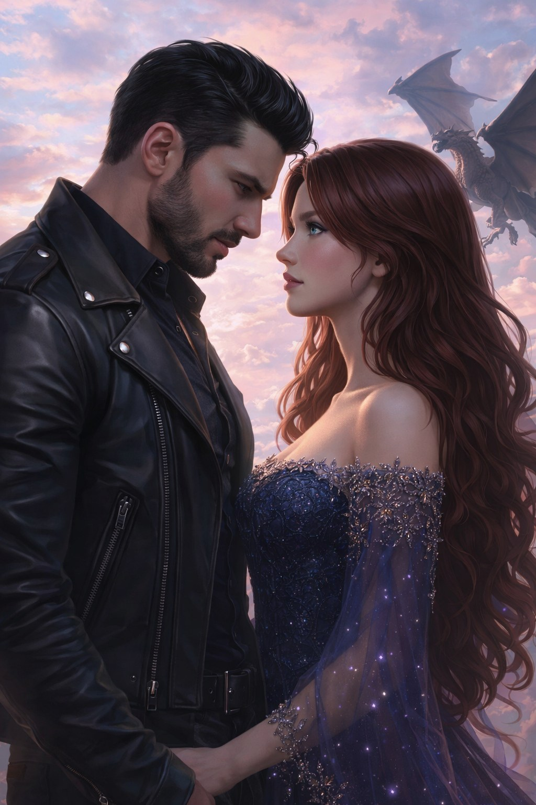

Глава 6
Граница
Недоверие не исчезает, но начинает меняться. Роберт всё чаще оказывается рядом, а каждый разговор между ними разрушает прежние границы.
После их первой встречи замок уже не казался прежним. Наталья пыталась убедить себя, что ничего особенного не произошло. Но каждый раз, проходя по длинным коридорам, она невольно прислушивалась: не раздадутся ли снова его шаги.
Они встречались ещё. Не потому, что искали друг друга. По крайней мере, именно так оба пытались это назвать.
Однажды они встретились в открытой галерее, где ветер приносил запах дождя.
— Ты всегда приходишь сюда, когда хочешь подумать? — спросил он.
— А ты всегда задаёшь вопросы, на которые уже знаешь ответ?
Он остановился рядом, но на расстоянии, которое не нарушало её покой.
— Иногда я хочу услышать, как отвечает другой человек.
— Тогда да, — сказала она. — Мне здесь легче дышать.
— Здесь всем легче дышать, кто приходит с тяжёлым сердцем.
— А у тебя тяжёлое сердце?
Роберт усмехнулся без радости.
— Ты задаёшь слишком прямые вопросы.
— А ты слишком долго обходишь главное.
Он посмотрел на неё так, будто эти слова задели его сильнее, чем ей хотелось бы.
— Возможно, — сказал он.
— Ты правда думаешь, что дракон должен умереть?
— Я думал так всю жизнь.
— А теперь?
Он молчал достаточно долго, чтобы она поняла: ответа у него нет.
— Теперь я не понимаю, почему всё выглядит иначе рядом с тобой, — признался он.
Эта честность застала её врасплох.
— Не из-за меня, — тихо произнесла она. — Просто ты впервые смотришь.
Он опустил глаза. Его рука легла на камень парапета совсем рядом с её ладонью. Не касаясь. Но почти.
— Нас учили, что сомнение убивает быстрее любого клинка, — сказал он.
— А мне всегда казалось, что без сомнения невозможно увидеть правду.
Ветер стал сильнее. Прядь волос Натальи коснулась её щеки. Роберт заметил это раньше, чем она. Казалось, он хотел поднять руку и убрать её, но вовремя остановился.
Это движение было почти незаметным. И именно поэтому оно взволновало её сильнее любого откровенного прикосновения.
— Ты всё ещё не ответил, — сказала она.
— На что?
— Боишься ли ты.
Роберт медленно выдохнул.
— Да.
— Чего?
Он посмотрел прямо ей в глаза.
— Того, что однажды не смогу вернуться к прежней жизни.
Наталья почувствовала, как её сердце мягко и больно сжалось.
— Может быть, тебе и не нужно возвращаться, — сказала она.
С этого дня их разговоры стали длиннее. Иногда Наталья рассказывала ему о своём мире. Иногда говорил он — о дорогах, горах, приказах и о том, как человек забывает звучание собственного сердца, если слишком долго живёт только долгом.
— И ты правда никогда не сомневался? — спросила она однажды.
— Сомневался. Но запрещал себе это.
— А сейчас запрещаешь?
Он посмотрел на неё.
— Уже нет.
Она улыбнулась.
И он понял, что всё чаще ждёт именно её улыбки.